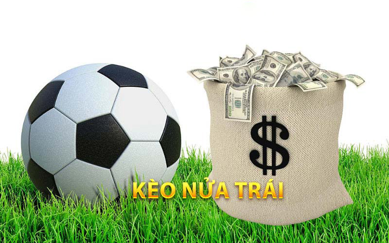
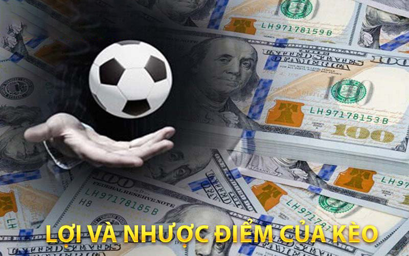

Home » Thể Thao B24h » Kèo Nửa Trái – Những Mẹo Và Lưu Ý Cần Nắm Khi Chơi
THỂ THAO B24h
Kèo Nửa Trái – Những Mẹo Và Lưu Ý Cần Nắm Khi Chơi
POSTED ON THÁNG TÁM 5, 2023 BY TÁC GIẢ B24h.LIVE

Kèo nửa trái là một khái niệm phổ biến trong lĩnh vực cá cược thể thao, đặc biệt là trong các trận đấu bóng đá. Số Đỏ 66 là một nhà cái uy tín và nổi tiếng với việc cung cấp các kèo nửa trái hấp dẫn. Trong bài viết này, chúng ta sẽ tìm hiểu chi tiết về kèo nửa trái tại Số Đỏ 66, bao gồm những điểm mạnh và yếu, cách thức tham gia, và các gợi ý để tận hưởng trải nghiệm cá cược tuyệt vời.
Khái niệm sơ lược và nguyên tắc hoạt động
Kèo nửa trái là một loại kèo cược trong đó một trong hai bên được chỉ định sẽ có một sự khởi đầu ưu thế từ đầu trận đấu. Thông thường, đội bóng yếu hơn sẽ được hưởng lợi từ kèo chấp 0.5 này.
Kèo Nửa Trái tại Số Đỏ 66
Số Đỏ 66 là một trong những nhà cái hàng đầu hiện nay và cung cấp rất nhiều lựa chọn kèo nửa trái hấp dẫn cho người chơi. Điều đặc biệt về Số Đỏ 66 là tính minh bạch và công bằng trong việc thiết lập tỷ lệ cược.
Kèo chấp 0.5 tại Số Đỏ 66
Các kèo nửa trái tại Số Đỏ 66 thường được cung cấp với các tỷ lệ cược hợp lý và cập nhật liên tục theo tình hình trận đấu. Điều này giúp người chơi có thể tham gia vào cược một cách linh hoạt và nắm bắt được những thay đổi trong trận đấu.
Cách thức tham gia vào kèo chấp 0.5 tại Số Đỏ 66
Để tham gia vào kèo nửa trái tại Số Đỏ 66, bạn cần tuân thủ các bước sau:
- Đăng ký tài khoản: Truy cập vào trang web Số Đỏ 66 và đăng ký một tài khoản cá cược.
- Nạp tiền vào tài khoản: Sau khi đăng ký, bạn cần nạp tiền vào tài khoản cá cược để có thể đặt cược trên kèo nửa trái.
- Chọn trận đấu và kèo 0.5: Trên giao diện Số Đỏ 66, bạn có thể chọn trận đấu và tìm kiếm các kèo nửa trái hiện có. Xem xét tỷ lệ cược và thông tin về trận đấu trước khi đặt cược.
- Đặt cược: Sau khi chọn kèo nửa trái, nhập số tiền cược và xác nhận đặt cược của bạn.
- Theo dõi và quản lý kèo: Sau khi đặt cược, bạn có thể theo dõi trận đấu và xem liệu kèo 0.5 của bạn có thành công hay không. Số Đỏ 66 cung cấp các công cụ quản lý kèo giúp bạn theo dõi tiến trình và điều chỉnh cược của mình khi cần thiết.
- Rút tiền: Nếu kèo nửa trái của bạn thắng, bạn có thể rút tiền từ tài khoản cá cược của mình. Số Đỏ 66 cung cấp các phương thức thanh toán đa dạng và đảm bảo tính bảo mật trong giao dịch.
Lợi ích và nhược điểm của kèo 0.5
Như bất kỳ hình thức cá cược nào khác, kèo nửa trái cũng có những lợi ích và nhược điểm riêng. Sau đây là các đánh giá về loại kèo bóng đá này:

Lợi và nhược điểm của kèo
Lợi ích:
- Tăng khả năng thắng cược: Kèo 0.5 mang lại sự ưu thế cho đội yếu hơn từ đầu trận đấu, do đó tăng khả năng thắng cược của người chơi.
- Cung cấp sự hứng thú: Khi tham gia kèo nửa trái, chúng ta sẽ có niềm vui và hứng thú trong việc theo dõi trận đấu và xem liệu đội yếu có thể vượt qua ưu thế hay không.
- Chọn trận đấu và kèo 0.5: Trên giao diện Số Đỏ 66, bạn có thể chọn trận đấu và tìm kiếm các kèo nửa trái hiện có. Xem xét tỷ lệ cược và thông tin về trận đấu trước khi đặt cược.
Nhược điểm:
- Rủi ro cao: Mặc dù có tỷ lệ thắng cao, nhưng kèo nửa trái vẫn là một hình thức cá cược có rủi ro. Đôi khi đội yếu có thể không vượt qua ưu thế ban đầu và khiến bạn mất tiền cược.
- Cần phân tích kỹ lưỡng: Để thành công với kèo 0.5, anh em cần phân tích kỹ lưỡng trước khi đặt cược, từ việc tìm hiểu thông tin về đội bóng, thành tích gần đây, đội hình, sự thiếu vắng của cầu thủ chủ chốt quan trọng, vv.